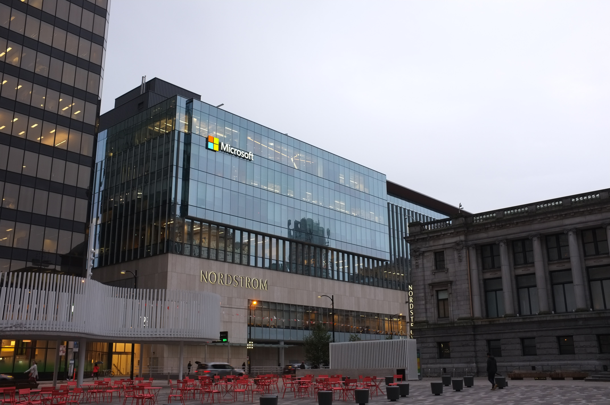

RuStore будет обязательно предустанавливаться на смартфоны в России
Российский магазин приложений RuStore будет обязательным для предустановки на смартфоны. RuStore заменит
в списке программу для доступа к социально значимым ресурсам App List. Решение вступит в силу с 1 марта.
Авиакомпания «Россия» приступила к внедрению отечественного метеорологического ПО
Опубликовал
TACC 9 ноября 2022
Созданное «Аэрософтом» программное обеспечение будет интегрироваться в бортовой планшет пилотов.
Метеорологическая информация в него будет поступать от Росгидромета, а навигационную базу поставляет
Центр аэронавигационной информации. Данные будут обновляться каждые шесть часов. Внедрение отечественного
программного обеспечения призвано повысить точность расчетов рабочих планов полетов. По оценкам компании,
это поможет экономить до 3% топлива.
В России скачивают все больше пиратских Windows

Количество загрузки с торрент-трекеров пиратских копий продуктов Microsoft, таких как Windows и Office,
растет с августа. По данным Peer Trace, на сегодняшний день в России эти программы скачивают почти 200
тысяч раз в день. Эксперты считают, что на эти цифры влияет начало учебного года, а также то, что далеко
не весь бизнес сумел перейти на Linux и вынужден возвращаться к решениям американской компании.
Российская компания пообещала запуск беспилотного аэротакси к 2025 году
Опубликовал
ТАСС 08 ноября 2022
Компания Hover приступила к сертификации аэротакси собственной разработки, сообщает ТАСС. А коммерческие
полеты предприятие обещает начать уже в 2025 году. Модель аэротакси рассчитана на двух пассажиров, может
подниматься на высоту до 150 метров и разгоняться до 200 километров в час. Заряда батареи хватает на 40
минут.
Майнинг стал невыгоден, видеокарты подешевели
На рынке образовался переизбыток видеокарт, которые раньше работали в фермах.Причин несколько. Во-первых,
энергокризис привел к росту цен на электричество, а майнинговые фермы его требуют много. Во-вторых, сами
криптоактивы обвалились. Тот же биткоин с марта подешевел более чем вдвое и сейчас торгуется чуть выше
отметки 20 тысяч долларов.